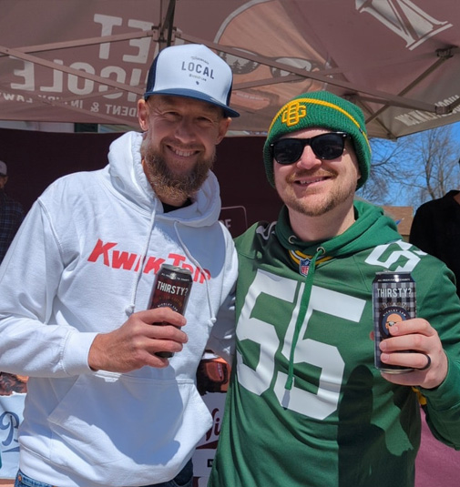

Looking to work together?
I'm always excited to connect with awesome brands that align with my audience. If you're interested in collaborating, I'd love to hear more about your company and what you're looking to achieve. Feel free to email me with details about your brand, your goals, and the terms you'd like to discuss.
I’ve had the pleasure of working with companies like Nicolet Law, Legend Larry's, and Offseason Brand and I'm always open to exploring new opportunities. Let's connect and create something great together.